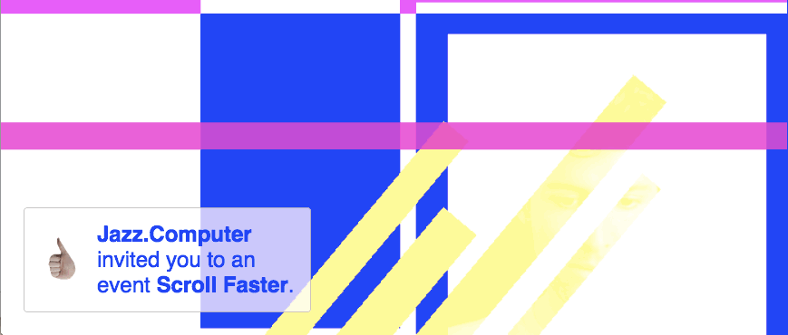

archive stuff, and keep track of things.
Back to Blog | Gary-Martin
Yotam Mann |
|---|
|
I came across Yotam Mann through another influence of mine, Sarah Rothberg, as they have collaborated on a few projects together.
Yotam Mann is a musician and instrument builder, who makes music with code. He has developed a JavaScript library for making interactive music in the web browser called tone.js. A particular work that I like, (that I had myself thought about making before I came across it) is Jazz.Computer. It’s an interactive music piece that develops as the user scrolls the mouse of their computer. I like that the interaction required to make music is something we are so used to doing anyway, a familiar mechanic. The song speeds up the faster you scroll and visuals respond in their own way. The sonic aesthetic lends itself for this type of control by a‘non’performer’, it is non-linear and weaves in and out of being synchronous. I’d like to maybe make a number of these in replace of an EP for the next batch of music I write. I will also be looking into tone.js to see if I can make anything with it as I being my coding adventure.  |